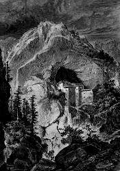

Predjamska Jama
Predjama Cave, Predjamski Grad, Höhlenschloß Lueg
Useful Information
| Image: View from the road to the castle. |
| Location: | 8km northwest Postojna. |
| Open: |
The Castle:
JAN-FEB Tue-Fri 10-16, Sat-Sun 10-17.
MAR-APR daily 10-17.
MAY daily 9-18.
JUN-AUG daily 9-19.
SEP daily 9-18.
OCT daily 10-17.
NOV-DEC Tue-Fri 10-16, Sat-Sun 10-17.
The Cave: JUN-SEP daily 11, 13, 15, 17. [2003] |
| Fee: |
The Castle: Adults SIT 1,000, Children (6-14) SIT 600, Students SIT 700.
The Cave: Adults SIT 1,000, Children (6-14) SIT 600, Students SIT 650. Both: Adults SIT 1,690, Children (6-14) SIT 950, Students SIT 1,100. [2003] |
| Classification: |
 Karst caveCave Castleriver cave Karst caveCave Castleriver cave |
| Light: | Castle: electric. Cave: electric torches. |
| Dimension: | T=9-10°C, L=7,571m, A=490m asl |
| Guided tours: | D=90min, L=900m. The tour is very wild, speleological equipment is necessary. Wellingtons, and torches for 8 persons are on hire. |
| Photography: | |
| Accessibility: | |
| Bibliography: | |
| Address: |
Predjamski Grad, Predjama, 6230 Postojna, Tel: +386-5-7516015 Postojnska Jama - Tourizem, Jamska cesta 30, 6230 Postojna, Tel: +386-5-7000100, Fax: +386-5-7000130. |
| As far as we know this information was accurate when it was published (see years in brackets), but may have changed since then. Please check rates and details directly with the companies in question if you need more recent info. |
|
History
| 1202 | first castle Jamski Grad in the Erazmova Jama first mentioned. | |
| 1570 | second castle in the cave entrance. |
|  |
| Image: an engraving from the 19th century. |
Description
Predjamski Grad is perhaps the most famous cave castle in the world. The castle is located in a 123 m high limestone cliff, in the entrance of a cave. This extraordinary and romanic location made it well known.
The cave behind the castle is called Erazmova Jama, after a knight living in the castle, and has 4 levels. The deepest level is water filled, the river flowing through is called Lovka. The castle is built into the huge entrance of the middle level.
An exit from the top level to the plateau was used as secret entrance in the middle ages, today it is filled with rocks. The story goes, that the castle was besieged, but the people in the castle had the secret entrance, and so they had enough to eat. They loughed on the besieger and threw down fresh fruit, to discourage them.
 |
| Predjamska Jama Gallery |
- See also
 Search Google for "Predjamska Jama"
Search Google for "Predjamska Jama" Google Earth Placemark
Google Earth Placemark Postojnska Jama,
official website.
(
Postojnska Jama,
official website.
(


 )
)- Predjama Castle. Very detailed description, overloaded with graphics.
()
- Predjamski Grad
- Postojnska Jama - Turizem
- Visita a Postumia (grotte), al Monte Nanos e al Castello di Lueg
()
- Burg im Felsen: Predjama
()